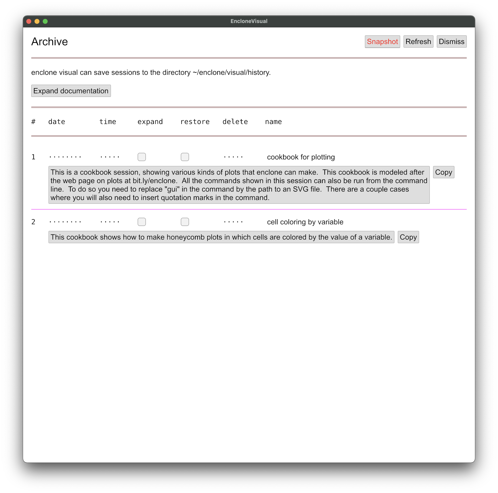
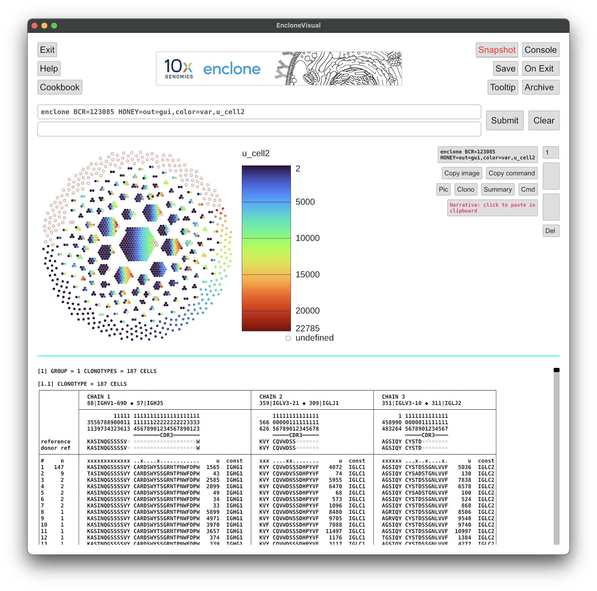
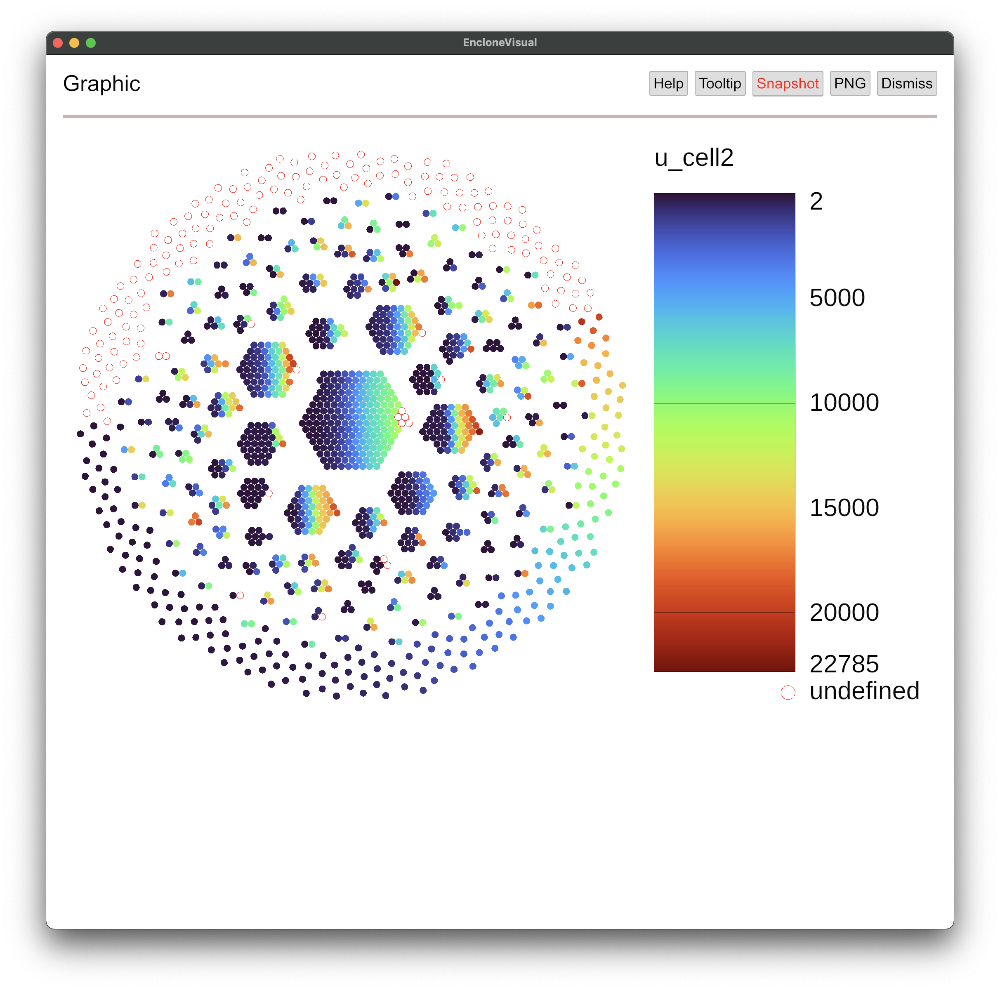

enclone visual is a graphical user interface (GUI) for enclone that can be run on a Mac or Linux box. It allows for simultaneous viewing of clonotype tables and graphical objects such as honeycomb plots that enclone can create, and has several other features that you may find convenient.
Please note that enclone visual is alpha (α) software!
• Users may encounter bugs that we are unable to fix. This is in part because different
operating system versions may yield different behavior, and we may be unable to replicate such
problems.
• There are a few features of enclone that are not properly delivered in
enclone visual. Notably, clonotype
tables are in black and white rather than color. To fix this, we are waiting on code changes
from developers outside 10x, and do not have a timeline for those changes.
• At present we only support the Mac and Linux platforms. However, because of considerable
variability between Linux configurations, we anticipate that there may be problems with Linux.
Please see the debugging under Linux section, below. We think it likely that the code could be
generalized to the Windows platforms, but have not yet done so.
1. To use enclone visual,
follow the installation instructions for enclone. Choose the medium or a larger
option. Then open a terminal window, and type enclone VIS. An
enclone visual window should appear.
2. The operating system will intercede and ask if you will allow certain kinds of access. This may include asking for permission to capture the screen, which you should allow, and then restart your Terminal. This should be a one-time operation. The reason for needing access is that upon pushing certain buttons, enclone visual will do a screen capture of the enclone visual window and copy that to your clipboard.
3. enclone visual is primarily command driven. This means that you still need to formulate an enclone command! It also means that enclone visual commands can be reproduced in enclone, and, for example, scripted. The commands for enclone visual are similar to, but not identical to enclone commands. There are two differences:
gui. This is illustrated below."...") special characters, although arguments containing
blanks do still need to be quoted.In the enclone visual window, you will see a Help button. Please push that button
and read the help text there. This will take you about five minutes, and then you'll
understand how the system works. Some of the behavior is counterintuitive but easily grasped.
Push the Archive button. You will see the following (without the red coloring
of the Snapshot button, which is how we captured the image):

If you later save enclone visual sessions, they will appear as entries on this page. For now,
there are only two entries, which are built-in cookbooks. Please expand and read the documentation.
Then for each cookbook, in turn, check the restore box, push Dismiss to
return to the main window, and work your way through.
Here we show an example. You would have seen this in the cookbooks, but we show it here too.
(Note that the outputs here may change over time as enclone is updated.)
Enter this command
enclone BCR=123085 HONEY=out=gui,color=var,u_cell2 in the command box.
This will display a honeycomb plot showing all cells, colored by the variable u_cell2,
which is the UMI count for the second chain (relative to the numbering of columns in a given
clonotype). The "undefined" cells arise from the case where there is no second chain. Note that
you could arrange to instead color by almost any variable that you can imagine!
You will see something like this:

This is the basic view. Now suppose that you want to see only part of this view, for example
just the plot. Push the Pic button.

Now if you push the Dismiss button, you'll be back to the main page.
Suppose that you now wish to reproduce the same plot from the command line in a terminal
window. In the command enclone BCR=123085 HONEY=out=gui,color=var,u_cell2,
you would change gui to the name of a file (or path), ending with either
.svg or .png, depending which you prefer. For example, you could use
enclone BCR=123085 HONEY=out=plot.svg,color=var,u_cell2 to put the plot output
of the command into a file plot.svg. You could also to add the argument
NOPRINT, if you do not want to see the standard output (clonotype tables) that
enclone generates.
When you run a series of commands in enclone visual, you create a series of states, and you can navigate instantaneously between those states using the up and down arrows on the right side of the window, which become visible only as you create multiple states. You can also delete states that you're not interested in, and you can annotate them with comments.
All these states comprise a session. You can save your session by clicking on the
Save button.
When you're done, you can push the Exit button to leave enclone visual.
If you saved your session, then you can restart enclone visual
later, push the Archive button, and then restore your previously saved session.
These saved sessions can also have names and narratives associated to them.
There is unreleased code in enclone visual that enables doing "back end" computations on a remote server. This is something that we could make public if there was sufficient demand.
There are three motivations for this capability:
The catch with the remote computation is that for most system configurations, a "magic incantation" is needed to "jump over" a firewall between your personal machine and the server. We only know what this incantation is for our system, and thus some experimentation would be required for yours. To release this feature we would need to devise general instructions.
On a Linux computer, if you type enclone VIS, and get an error message, let
us know. We provide here followup steps that may be applicable. The idea of these steps is that
the problem may not be in enclone, but rather lie in upstream software, or be an issue with your
computer.
1. The software underlying enclone_vis uses the GPU on your computer. It is possible that the GPU is not accessible to this software. You can try the following two commands as a diagnostic:
If when you do this you seesudo apt install -y mesa-utilsglxinfo | grep Accelerated
Accelerated: no2. To run the next steps, you need to have a current version of Rust on your computer. First, if Rust is not already installed in your computer, you can install it using
Now you can tell what version you have by typingsudo apt updatesudo apt install cargo
rustc --version. Go to
https://www.rust-lang.org to see what the current version
is. If those are different, you may need to update, using approximately the following steps:
Possibly you can get away without doing these things.sudo apt remove cargosudo apt autoremove cargocurl --proto '=https' --tlsv1.2 -sSf https://sh.rustup.rs | shgo with option 1need ~/.cargo/bin to be in path
3. Now you can test to see if your problem lies in a particular Rust crate called
wgpu, as follows:
If a cube shows up on your screen, then probablygit clone https://github.com/gfx-rs/wgpucd wgpucargo run --example cube
wgpu is working. Otherwise it may
make sense to file an issue at
https://github.com/gfx-rs/wgpu/issues.
For that you should show exactly what you typed and the terminal output, as well as the output of
the command lsb_release -a.
4. If wgpu works, then a next step would be to see if there is a problem
in the iced crate. Try this:
A clock should show up. If not, you could file an issue at https://github.com/iced-rs/iced/issues, with details as above.git clone https://github.com/hecrj/icedcd icedcargo run --package clock
You can send your thoughts to us here: enclone@10xgenomics.com. It is also possible for you to contribute directly to the code and thereby extend capabilities yourself. Regardless, please let us know if and how you are using enclone visual. We are very interested in your experiences!